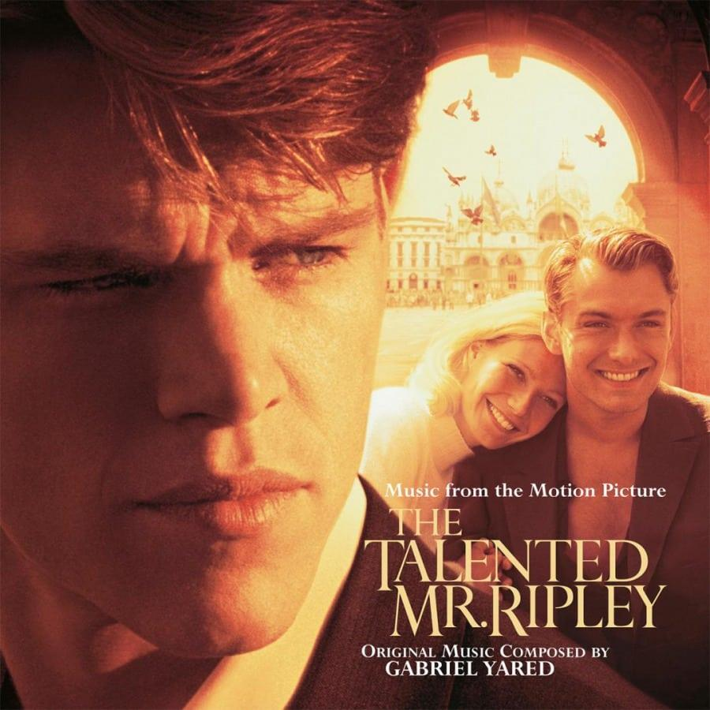
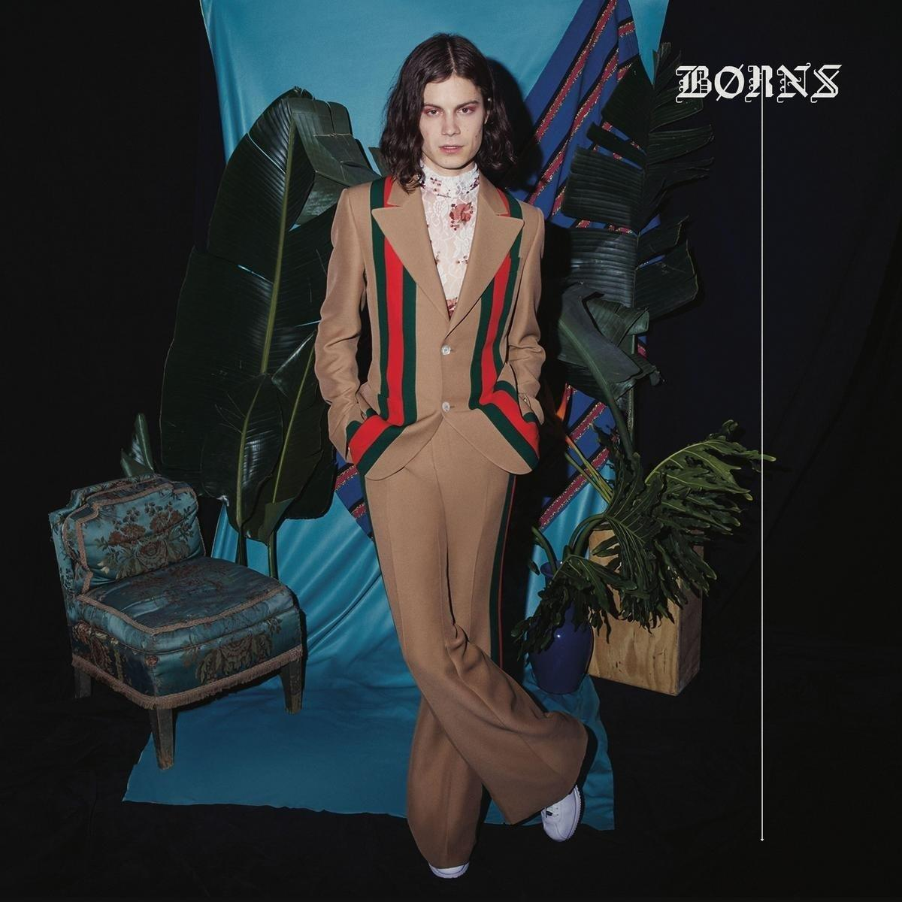

MEMBERSHIP

V I N Y L ' S H I S T O R Y
바이닐 음반이라고 하는 LP는 Long play의 약자로써 축음기의 음반 중 하나입니다.
한곡 재생 시 수시로 음반을 뒤집어야 하는 번거로운 SP음반의 단점을 보완하기 위하여 1인치에 소리골을 300줄로 촘촘히 늘리고 음반의 직경도 7인치에서 12인치로 늘리게 됩니다. 또한 음반의 재질을 셀락에서 플라스틱 비닐로 바꿔서 무게를 줄이고 동시에 음반이 깨지지 않도록 턴테이블 암의 무게를 1/100 수준으로 줄여 새로운 음반을 틀 수 있게 한 LP라는 음반이 새롭게 만들어졌습니다.
시대를 초월해 사랑 받은 Legendary Vinyls 함께 만나보세요.
S P E C I A L L I V E , L I V E , L I V E
음악은 스튜디오에서 만들어지지만 라이브 현장에서 완성되기도 한다. 뜨거운 열기와 함께 연주자와 관객이 하나되는 순간, 현장의 기록인 라이브 레코딩이야 말로 진정한 음악의 살아있는 에너지를 만날 수 있는 간접 경험이라 할 수 있다. 페스티벌의 계절을 맞이하여 최고의 라이브 명반들을 만나보자.
V I N Y L
1950년대 이후 대중음악의 장르X연대별 큐레이션
- NEW | 신규 음반
- ESSENTIAL | 추천 음반
-
Jazz > 2000s~
Both Directions At Once
2018년 재즈 씬을 비롯해 대중음악에서 가장 화제를 모았던 John Coltrane의 미발표 앨범.
재즈의 알파와 오메가, 그리고 수많은 팝, 록 뮤지션들까지 영향을 끼쳤던 그이기에 이 앨범의 존재는 보다 특별하다.
1963년 Classic Quartet 시기에 녹음된 무제의 오리지널 튠들을 포함하고 있어 더욱 화제를 모았다.
아티스트 | John Coltrane 출판사 | Impulse!
-
World >
Stony Hill
60회 Grammy Awards에서 Best Reggae Album 부문을 수상한 Damian Marley의 네 번째 솔로 앨범.
밥말리의 막내 아들로 13살부터 음악을 시작해 온 그는 21세기 자메이카 아티스트 중에서 성공적인 케이스로 손꼽힌다.
디지털 댄스홀부터 트랩에 이르는 다채로운 프로덕션과 함께 가사를 통해 레게 씬의 현재를 다시 한 번 각인시켰다.
아티스트 | Damian "Jr Gong Marley 출판사 | Ghetto Youths International
3개월 동안 많이 열람한 음반
- 1 21 Adele
- 2 1 The Beatles
- 3 A Rush of Blood to the Head Coldplay
- 4 Nevermind Nirvana
- 5 La La Land music by Justin Hurwitz
Adele
P R I N C I P L E S
VINYL & PLASTIC이 제안하는 좋은 음악의 4원칙
VINYL & PLASTIC 큐레이션은 '좋은 음악'을 대하는 일상적 태도에 대한 기준을 두고 선정 원칙의 프레임을 유연하게 확장하고자 한다.
좋은 음악은 영감을 깨우고 자극하며(Inspiring), 일상에 생동감을 더한다(Vitalizing).
또한, 대중음악사에 전환점을 제시한 선구적인 음악(Pivotal)과 시대를 초월하는 진정한 음악(Timeless)도 놓쳐서는 안된다."
VINYL & PLASTIC
소비의 음악에서 소유의 음악으로
세상 어디에서든 우리는 스마트폰 터치 몇 번이면 음악을 즐길 수 있다.
하지만 동시에 음반이 들려주는 아날로그적 감동과 소유의 즐거움을 기억하고 갈망한다.
우리는 뮤직 라이브러리를 통해 바이닐이라는 음악적 영감을 주목했고 더 많은 사람들과
울림을 공유하기 위해 누구나 이용 가능한 퍼블릭 공간을 선보이며 아날로그와 디지털의
경계에서Vinyl & Plastic은 사라져가던 '음반'에 대한 향수를 다시금 불러일으킨다.
새로운 음악적 경험과 취향을 탐색하는 플레이그라운드
비틀즈가 걸었던 ABBEY ROAD의 교차로처럼, Vinyl & Plastic 출입구를 지나 바닥을
걷는 순간 새로운 경험이 시작된다. 켜켜이 쌓인 바이닐과 CD를 넘기는 Digging 설렘,
미세한 마찰음 마저도 음악으로 만드는 턴테이블과 카세트플레이어의 아날로그 사운드
곳곳에 숨겨진 청음 기회를 통해 새로운 장르와 아티스트를 발견하는 즐거움까지 우리
일상의 BGM이 된 음악을 온전히 직접 경험하고, 소유하는 공간, Vinyl & Plastic이다.
INFORMATION
서울시 용산구 이태원로 248 (한남동 683-131) VINYL & PLASTIC
Contact
02-2014-7800
vinylandplastic@hcs.comHours
화 - 토요일 12:00-21:00
일요일 12:00-18:00
* 매주 월요일, 설/추석 연휴 휴관
* 법정공휴일 운영시간 일요일과 동일Parking
주차 및 발레파킹 불가
(인근 공영주차장 혹은 대중교통 이용)public transportation
지하철 (6호선)
한강진역 3번 출구에서 도보 6분(400m)
이태원역 3번 출구에서 도보 11분(800m)
( 버스 - 110B번, 400번, 405번, 03번 )
주의사항
반려동물 목줄 or 케이지 이용
셀카봉 이용금지
흡연 금지
주차 및 발레파킹 불가
NOTICE
- [ 공지 ]
- Vinyl ＆ Plastic 추석연휴 휴관 안내 2018.08.30ㅤㅤㅤㅤㅤㅤㅤㅤㅤㅤ
Vinyl ＆ Plastic 추석연휴 휴관 일정을 아래와 같이 안내 드리오니 이용에 착오 없으시기 바랍니다.
· 휴관 기간：2018.09.23（일） ∼ 09.26（수）
- [ 공지 ]
- Vinyl ＆ Plastic 할인기간 안내 2018.06.29ㅤㅤㅤㅤㅤㅤㅤㅤㅤㅤ
Vinyl ＆ Plastic 카드 결제 시 할인 안내 드리니 이용에 참고하시기 바랍니다.
＜대상카드＞ 모든 신용카드（무기명 법인ㆍGift카드 제외）
＜기간＞ 2018.09.01~2018.09.30
＜내용＞
- 할인 대상 품목 및 카페 20% 현장 할인（도서 및 일부 품목 제외）
- 100% 각 카드사 포인트 사용 가능
- 5만원 이상 결제 시 2~3개월 무이자할부
＜유의사항＞
- 카드 포인트 사용은 할인과 중복 적용 불가
- 포인트 부족 시 잔여 포인트만큼 사용 가능（1 포인트부터 사용 가능）
- [ 공지 ]
- Vinyl ＆ Plastic 운영시간 변경 안내 2016.12.29ㅤㅤㅤㅤㅤㅤㅤㅤㅤㅤ
2017년 1월 3일 부로 Vinyl ＆ Plastic 운영시간이 변경됩니다.
＜운영시간 변경 내용＞
· 변경 전
화-토요일 12：00 ~ 24：00
일요일/법정공휴일 12：00 ~ 18：00
매주 월요일 휴무, 설/추석연휴 휴무）
· 변경 후
화-토요일 12：00 ~ 21：00
일요일/법정공휴일 12：00 ~ 18：00
매주 월요일 휴무, 설/추석연휴 휴무）
· 적용일자
2017년 1월 3일（화）부터 적용
- Vinyl ＆ Plastic 2016.06.10 OPEN 2016.06.10ㅤㅤㅤㅤㅤㅤㅤㅤㅤㅤㅤㅤㅤㅤㅤㅤㅤㅤㅤㅤ
이 곳은 직접 보고, 듣고, 만지는 소유의 음악을 위한 공간입니다.
음악을 즐기길 원하는 사람이라면 누구나 이용 가능한 퍼블릭 공간입니다.
지금 Vinyl ＆ Plastic에서 바이닐과 CD가 선사하는 다채로운 경험을 통해 음반이 주는 아날로그적 즐거움을 만끽하시길 바랍니다.
Music Playground. by Vinyl ＆ Plastic
FAQ
- 이용 가능 시간은 어떻게 되나요
화요일부터 토요일까지는 낮 12시부터 저녁 9시까지이며, 일요일과 법정 공휴일은 낮 12시부터 저녁 6시까지 운영됩니다.
매주 월요일, 설/추석 연휴는 정기휴관일 입니다. 새해 첫날 1/1일은 공휴일 기준으로 운영됩니다.
- 주차가 가능한가요
주차 및 발레파킹 서비스 이용이 불가하오니 양해 부탁 드립니다.
- 스토어 내에서 사진 촬영이 가능한가요
내·외부 사진촬영 가능하나 다른 고객에 방해를 줄 수 있는 플래시 / 삼각대 / 셀카봉을 이용한 촬영은 자제 부탁 드립니다.
- 식사나 음료를 마실 수 있는 장소가 있나요
Vinyl & Plastic 건물 내 2층에 위치한 카페에서 간단한 스낵과 음료를 구매하실 수 있습니다.
- 교환 / 환불이 가능한가요
미 개봉된 상품에 한하여 구입일로부터 7일이내 스토어를 방문하여 교환 / 환불이 가능합니다. 음료를 구매하실 수 있습니다.
반드시 구입 시 발급된 영수증을 지참해 주시기 바랍니다.
- 구입한 상품의 A/S가 가능한가요
음반의 A/S는 불가합니다. 뮤직기어 상품의 A/S 관련 내용은 스태프에게 문의 부탁 드립니다.
반드시 구입 시 발급된 영수증을 지참해 주시기 바랍니다.
- 원하는 음반이 있는데, 매장에 보유하고 있지 않습니다. 주문도 가능한가요
Vinyl & Plastic에서는 별도의 주문 판매는 하지 않습니다.
다만 재고소진 된 음반에 대해서는 스태프에게 문의해 주시기 바랍니다.
- 선물 포장 서비스나 배송서비스가 가능한가요
죄송합니다. 선물 포장 서비스는 제공되지 않고 있으며,
물품은 현장구매만 가능하고 그 외의 배송서비스는 제공되지 않습니다.
NEW RELEASES
음악 분야의 트렌드를 한눈에 파악할 수 있는 신보 안내

- 
UNITY
서사무엘
Sonatas for Violin
Marie-Claire Alain
Kaya
Bob Marley
Language
MNEK
Mamma Mia!
Various Artists
Lil Boat 2
Lil Yachty
La Vie En Rose
Edith Piaf
Come Fly With Me
Frank Sinatra
We Get Requests
The Oscar Peterson Trio
Know.
Jason Mraz
Love Me/Love Me Not
Honne
Mr. Ripley
Gabriel Yared
Wild Man Dance
Charles Lloyd
The Prisoner
Herbie Hancock
Nevermind
The Doors
Morrison Hotel
Jason Mraz
Led Zeppelin II
Led Zeppelin
Dookie
Green Day
The Real Royal Albert
Bob Dylan
The Sound Of Music
Richard Rodgers
ESSENTIAL
시대를 초월해 사랑 받은 Legendary Vinyls
뛰어난 음악적 완성도와 독창성으로 매체와 평론, 다양한 어워드에서 인정 받은 바이닐 명반을 소개한다.
새로운 트렌드를 이끌고, 영감을 선사하며, 시대를 초월해 사랑받아 온 음반들을 직접 마주할 수 있다.
-
1999
Prince / 1982
- 수록곡 -
01. 1999
02. Little Red Corvette
03. Delirious -
Controversy
Prince / 2015
- 수록곡 -
01. Controversy
02. Sexuality
03. Do Me, Baby -
Commodores
Commodores / 2017
- 수록곡 -
01. Squeeze The Fruit
02. Funny Feelings
03. Heaven Knows -
Innervisions
Stevie Wonder / 1973
- 수록곡 -
01. Too High
02. Visions
03. Living For The City -
Let's Get It On
Marvin Gaye / 2016
- 수록곡 -
01. Lets Get It On
02. Please Dont Stay
03. If I Should Die Tonight City
-
Brown Sugar
DAngelo / 2015
- 수록곡 -
01. Brown Sugar
02. Alright
03. Jonz In My Bonz -
The Best Of Sade
Sade / 2016
- 수록곡 -
01. Your Love Is King
02. Hang On To Your Love
03. Smooth Operator -
What's Going On
Marvin Gaye / 2016
- 수록곡 -
01. Whats Going On
02. Whats Happening Brother
03. Flyin High In The Friendly Sky -
Back To Black
Amy Winehouse / 2013
- 수록곡 -
01. Rehab
02. You Know Im No Good
03. Me Mr Jones -
Aijuswanaseing
Musiq Soulchild / 2015
- 수록곡 -
01. Scratch Introlude
02. Girl Next Door feat. AAries
03. You And Me
MONTHLY SPECIAL
한 달에 한번, 새로운 키워드가 이끄는 음악적 경험
이 시대 힙합의 새로운 흐름을 이끌어가고 있는 ‘King Kendrick’. 그와 함께 그 주변에 있는 아티스트들의 지형도를 살펴보면 힙합 역사의 어제와 오늘 뿐 아니라 LA를 기반으로 한 새로운 대중음악의 흐름을
느낄 수 있다. 그와 함께 작업했던, 혹은 영향을 주고받았던 아티스트들은 그의 어릴적 우상이었던 2Pac에서 오늘날 새로운 마에스트로 Kamasi Washington에 이르기까지 장르와 시대, 스타일을 넘나든다.
ARTIST HIGHLIGHTS
대중음악 씬을 사로잡은 아티스트와 그들의 대표 음반
VINYL & PLASTIC은 독보적 행보로 대중음악씬에 영향력을 미친 아티스트를 선정해 집중 조명한다. 그들의 대표음반뿐 아니라 상대적으로 덜 알려졌지만 높은 음악적 가치를 지닌 음반까지 만날 수 있다.
NEW RELEASES
음악 분야의 트렌드를 한눈에 파악할 수 있는 신보 안내

9와 숫자들 99%, 베스트
9와 숫자들
TRAVEL:NOAH
HAON
Cantique d'Amour
Sunq-Won Yang, Enrico
#GOCHILD
Woodie Gochild
Anthem
Madeleine Peyroux
DAYTONA
Pusha T
ESSENTIAL
대중성과 독창성을 기준으로 큐레이션한 CD 명반들
시대와 장르의 경계를 넘어 뛰어난 대중성과 독창성으로 사랑 받아 온 CD 음반들을 소개한다.
비록 히트곡의 대열에 합류하지는 못했으나 그 음악적 가치를 인정 받은 숨은 명반들도 함께 만날 수 있다.
? [Digipak]
XXXTENTACION
Beerbongs & Bentleys
Post Malone
Enter The Wu-Tang
Wu-Tang Clan
Chet Baker Sings
Chet Baker
Beyond The Missouri Sky
Charlie Haden
Summertime
Various Artists
- 
Declaration
Kings Of Convenience
Blue Madonna
Borns
Delirium
Ellie Goulding
Whiplash (위플래쉬) o.s.t.
Various Artists
맘마 미아! 2 o.s.t.
Various Artists
Eric Clapton
Various Artists
BEST PICKS
시대와 장르를 넘나드는 Essential Plastic Selection
대중음악 씬을 사로잡은 대표적 음반들로 디스플레이된 벽인 Plastic Picks에서 지금 들어볼 수 있는 앨범을 만나보자.
-
Everything Is Recorded
Everything Is Recorded / 2018
- 수록곡 -
01. Intro
02. Close But Not Quite
03. She Said -
Dua Lipa
Dua Lipa / 2017
- 수록곡 -
01. Genesis
02. Lost In Your Light
03. Hotter Than Hell -
Electric Light
James Bay / 2018
- 수록곡 -
01. Introt
02. Wasted On Each Other
03. Pink Lemonade -
Shawn Mendes
Shawn Mendes / 2018
- 수록곡 -
01. In My Blood
02. Nervous
03. Lost In Japan -
Speak Your Mind
Anne-Marie / 2018
- 수록곡 -
01. Cry
02. Ciao Adios
03. Alarm
-
ranquility Base Hotel
Arctic Monkeys / 2018
- 수록곡 -
01. Star Treatment
02. One Point Perspective
03. American Sports -
Voicenotes
Charlie Puth / 2018
- 수록곡 -
01. Track 1
02. Attention
03. Track 3 -
PTX Presents
Pentatonix / 2018
- 수록곡 -
01. Attention
02. Finesse
03. New Rules x Are You That Somebody -
How Will You Know
Coin / 2018
- 수록곡 -
01. Dont Cry, 2020
02. Boyfriend
03. Talk Too Much -
AM Waves
Fat Beats / 2018
- 수록곡 -
01. Midnight In Richmond
02. Lenny
03. Take It Or Leave It
-
Something New
태연 / 2018
- 수록곡 -
01. Something New
02. 저녁의 이유 All Night Long
03. 바람 바람 바람 Baram -
The Story of Light
SHINee / 2018
- 수록곡 -
01. All Day All Night
02. 데리러 가
03. Undercover -
MONKEY HOTEL
Jannabi / 2018
- 수록곡 -
01. Goodnigh Intro
02. 뜨거운 여름밤은 가고 남은 건
03. Surprise! -
How to find true love
Hyukoh / 2018
- 수록곡 -
01. Graduation
02. 하늘나라
03. LOVE YA! -
jon
오존o3ohn / 2018
- 수록곡 -
01. Somehow
02. Oooh
03. 언제부터
-
Love
ADOY / 2018
- 수록곡 -
01. Wonder
02. Young
03. Bike -

Divided by Zero
3rd Line Butterfly / 2017
- 수록곡 -
01. 나를 깨운네
02. Put Your Needle
03. Sense Trance Dance -
사춘기 하
악동뮤지션 / 2017
- 수록곡 -
01. 생방송 live
02. 리얼리티 reality
03. 오랜 날 오랜 밤 last goodbye -

Where We Were Together
Say Sue Me / 2018
- 수록곡 -
01. Let It Begin
02. But l Like You
03. Old Town -
Hitch
강이채 / 2018
- 수록곡 -
01. HITCH
02. FOOLISH
03. 안녕
P R I N C I P L E S
Good books stimulate
and provoke.-
좋은 음악은 영감을 깨우고 자극한다. 듣는 이에게 영감을 주는 음악을 선택할 것. 멜로디와 사운드, 가사와 표현뿐 아니라 듣는 이의 감성과 마음을 자극하고 나아가 창작욕과 심미안을 일깨우는 음악이 좋은 음악이다.
Good music vitalizes
daily lives.-
좋은 음악은 일상에 생동감을 더한다. 음악은 삶과 함께하는 일상의 예술이다. 청자에게 감상의 경험을 넘어 삶을 보다 긍정적으로 바라볼 수 있는 에너지와 위안을 주는 음악이 좋은 음악이다.
Find music that has
influenced the field.-
선구자적인 전환점을 제시한 음악에 주목할 것. 독창적인 시도와 새로운 시선으로 장르의 흐름을 바꾼 의미 있는 영향을 남긴 음악을 선택한다.이들의 발자취가 곧 대중음악의 역사다.
Do not leave out any timeless
classics in music.-
진정한 음악은 시대를 초월한다. 고전은 유행을 넘어 꾸준히 새로운 음악의 레퍼런스로 재해석된다. 현재 대중음악의 밑바탕이 된 고전과 더불어, 다음 세대에도 고전이 될 가능성이 높은 음악을 선택할 것.
MUSIC GEAR
더 좋은 사운드와 디자인으로 음악을 즐기기 위한 뮤직기어
분야별 전문성과 권위 있는 수상 기록을 통해 엄선한 턴테이블과 헤드폰, 이어폰을 비롯해 국내외 주요 매거진이 주목한 신진 브랜드들을 한 발 앞서 소개합니다.
특히, 감각적인 빈티지 디자인과 클래식에도 손색 없는 음질을 자랑하는 GPO의 턴테이블을 국내 최초로 정식 수입해 선보입니다.
60여년간 수작업만을 고집해 온 Grado의 헤드폰과 탁월한 디자인으로 여러 차례 세계 대회에서 수상한 덴마크 브랜드 AIAIAI의 이어폰도 만날 수 있습니다.
-
VINYL
빈티지 포스터 세트
-
CD
명반 CD 모음집
-
HEADPHONE
Grado의 헤드폰
-
TURNTABLE
GPO의 턴테이블
ACCESSORIES
일상을 음악처럼 즐길 수 있는 패션&라이프스타일 소품
음악이 일상에 들어오는 순간, 삶은 더욱 다이내믹한 즐거움으로 넘쳐난다.
Vinyl & Plastic에서는 음악을 사랑하는 힙스터로부터 사랑 받아 온 패션 아이템을 쇼핑할 수 있다.
유니버설뮤직의 머천다이즈 브랜드로 ‘More than Music’ 모토 아래 해외 아티스트의 독보적인 컨텐츠에 스트리트 감성을 더한 브라바도(Bravado)를 만나보자.
더보기
- OUTER
- SWEATER
- SHIRT
SEOUL RECORD MAP
서울 시내 레코드샵 소개 (SEOUL RECORD MAP은 Vinyl & Plastic 매장에도 비치되어 있습니다.)
오너만의 취향과 관점을 뚜렷하게 드러내며 각기 다른 개성을 자랑하는 작지만 강한 서울 시내의 레코드 샵들을 소개합니다.
- VINYL
- CD
- CASETTE
서울 종로 · 중구 · 용산
(1)
뮤직코리아
뮤직코리아의 명동 지점으로 다양한
장르의 신보를 구비한 매장이다.ⓐ. 서울시 중구 명동8길 52 삼영빌딩
ⓣ. 02-3789-8210
ⓦ. www.musickorea.asia(2)
뮤직프라자
역사가 오래된 만큼 옛날가요와 올드
팝에 강한 종로 일대의 어르신들에게 사랑받고 있다.ⓐ. 서울시 종로구 종로 144-1
ⓣ. 02-2274-9994(3)
부루의뜨락
취미로 시작했던 작은 샵이 바이닐
마니아들의 보물창고로 거듭났다.
전문가의 음반 가이드를 받을 수 있다.ⓐ. 서울시 중구 명동 8나길 37-1
ⓣ. 02-778-7309(4)
서울레코드
동네에 하나쯤 있을 법 한 정감가는
매장. 수많은 바이닐을 취급하며
신보 CD까지 다양하게 갖추고 있다.ⓐ. 서울시 종로구 종로 154(종로3가)
ⓣ. 02-2265-9298
ⓦ. www.seoulrecord.net(5)
소리아
커피한잔과 함께 느긋하게 음악을
들어보고 구매할 수 있는 음반샵.
철저한 관리, 등급을 엄격하게 정한다.ⓐ. 서울시 종로66길 18 신원빌딩 201호
ⓣ. 02-2236-8535
ⓦ. www.soriah.co.kr
(6)
씨디마트
종로3가의 터줏대감. 다양한 CD와
중고 바이닐, 이제는 찾기 어려운 카세
트 테이프들이 벽을 가득 채우고 있다.ⓐ. 서울시 종로구 종로 150
ⓣ. 02-2285-4117(7)
우주만물
이름 그대로 '만물'을 취급한다.
바이닐은 유명하든 안 유명하든 취향이
담긴 음악을 선택한다.ⓐ. 서울시 중구 충무로9길 11 3층
ⓣ. 010-5630-6699(8)
LP 4989
100% 시험청음을 통해 검증된 바이닐
만을 취급하는 음반샵으로 ABC순으로
정리되어 원하는 음반을 찾기 쉽다.ⓐ. 서울시 중구 명동 8나길 37-1
ⓣ. 02-778-7309(9)
YesNo음악사
30년 전통의 K-Pop 위주 음반을 판매
한 매장으로 오래된 명반도 판매 한다.
굿즈나 기타 악세서리도 구입 가능ⓐ. 서울시 중구 소공로 102
명동지하쇼핑센터 바-1
ⓣ. 02-775-4586(10)
장안레코드
1979년 오픈 후 음악 수집가들의
발걸음이 끝이지 않는 곳.
연대와 장르를 불문한 명반이 많다.ⓐ. 서울시 중구 마장로 9길 49-27
ⓣ. 02-2234-6328
(11)
종로뮤직
2015년 개업한 신생 매장.
국악과 클래식에 조예가 깊으신 사장
님께 관련 음반가이드를 받을 수 있다.ⓐ. 서울시 종로구 종로 138
ⓣ. 02-2268-9817(12)
클리크 레코드
전 세계 독립 은반사의 언더그라운드
댄스뮤직을 중점 소개한다.
장르 다양성의 컬렉션이 돋보인다.ⓐ. 서울시 중구 을지로23길 8 3층
(13)
레코드이슈
2013년 오픈한 이태원의 레코드숍
겸 카페로 다양한 장르의 음반에 둘러
싸여 음악 이야기를 나눌 수 있다.ⓐ. 서울시 용산구 회나무로13가길 57
ⓣ. 02-6105-6139
ⓦ. www.facebook.com/recordissue(14)
마술피리
바이닐 수입 전문 매장으로 판매 뿐 아
니라 '클래식 음악강좌 전문 감상실'을
통해 지식을 공유하는 문화공간이다.ⓐ. 서울시 용산구 청파로74 230호
ⓣ. 02-707-0799(15)
올리버
희귀음반과 신보를 포함해 다양한 장르
의 바이닐과 CD, 블루레이가 있다.ⓐ. 서울시 용산구 청파로74 285호
ⓣ. 02-706-7389
ⓦ. www.olivermusic.kr
서울 회현 지하상가 서울 마포 · 홍대
(16) ~ (22)
THE DISK / 리빙사 / LP LOVE
코다 / 클립트 / 파스텔 / 파파게노회현쇼핑센터에 모여있는 매장들이다.
ⓐ. 서울시 중구 소공로 58
회현지하쇼핑센터(23)
김밥레코즈
홍대입구역 근처에 위치한 레코드숍
독립 레이블을 통해 공연 기획과 앨범
제작 등도 진행한다.ⓐ. 서울시 마포구 월드컵북로 2길 90
ⓣ. 02-322-2395
ⓦ. gimbabrecords.blogspot.kr(24)
메타북스
재즈, 클래식, 싸이키델릭,프로그레시
브, 하드락 등 다양한 장르가 모여 있다.ⓐ. 서울시 마포구 와우산로 18길 20 2층
ⓣ. 02-3412-2735
ⓦ. www.metavox.co.kr(25) ~(28)
시트레코드 / Alouette
엠투유레코드 / 웨스트브릿지마포, 홍대 지역에 밀집되어있는 바이
닐 매장들이다.ⓐ. 서울시 마포구 신촌로,와우산로
(26)
토이레코드
빈티지 바이닐 팬이면 가야 할 음반샵.
ⓐ. 서울시 마포구 잔다리로 63
ⓣ. 070-4652-3858
ⓦ. www.toyrecords.co.kr